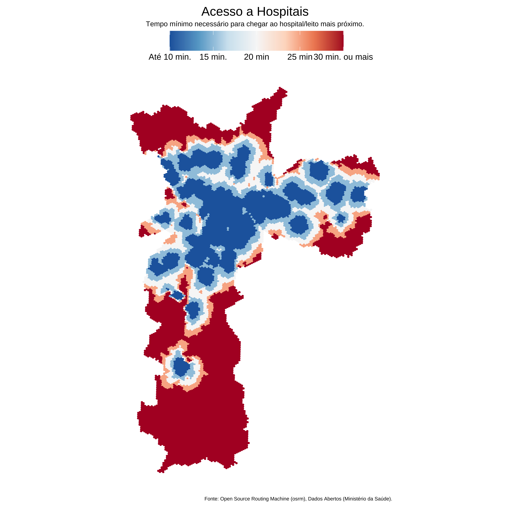

library(data.table)
library(tidygeocoder)
library(sf)
library(stringr)
library(osrm)
library(mapview)
library(ggplot2)
library(aopdata)Acessibilidade à Saúde
Neste post, vou mapear a acessibilidade a hospitais e leitos em São Paulo. Para avaliar quantitativamente o nível de acessibilidade vou montar uma métrica bastante simples: o tempo mínimo necessário que se leva para chegar no hospital/leito mais próximo, considerando um deslocamento de bicicleta1.
Para tornar o problema tratável, divido a cidade em hexágonos, no padrão H3, em resolução 9. Esta resolução tem um tamanho aproximado de 1km2 e estratifica a cidade em cerca de 15 mil subáreas. Seria possível reduzir o número de hexágonos cruzando este grid com dados de população do Censo. Contudo, como os dados do Censo a nível de setor censitário estão consideravelmente defasados, utilizo o grid inteiro.
Para cada hospital/leito, contruo isócronas de 10, 15, 20, 25 e 30 minutos, considerando um deslocamento de bicicleta. A partir desta métrica simples, pode-se construir refinamentos como ponderar o número de leitos acessíveis em relação a população que reside em cada região. Evidentemente, pode-se considerar também outros modos de transporte e intervalos de tempo.
Setup
Como os dados são relativamente grandes vou usar o data.table para a manipulação dos dados. O pacote tidygeocoder é utilizado para georeferenciar alguns dos endereços que estão com lat/long ausente.
Dados
As bases de dados são de livre acesso no site dados.gov.br. Especificamente, vamos usar a base de Cadastros de CNES e de Hospitais e Leitos. Normalmente, eu importaria estes dados usando webscrapping, mas neste caso acho mais simples baixar os arquivos manualmente. Como são apenas duas tabelas que precisam ser baixadas, acho que seria um exagero fazer um rotina para importar os dados via scraping. Além disso, olhando o código-fonte da página, o download é feito via uma URL dinâmica, o que exigiria o uso do RSublime, ou, alternativamente, o uso do BeautifulSoup em Python2.
cnes = fread("cnes_estabelecimentos.csv")
leitos = fread("Leitos_2024.csv", encoding = "Latin-1")Limpeza
Os códigos abaixo mostram a rotina de limpeza necessária. Como os dados brutos são relativamente bem estruturados não é necessário muito esforço neste passo. O primeiro código abaixo seleciona apenas as colunas necessárias da base de Cadastro de CNES para São Paulo.
# Simplifica e limpa o nome das colunas
cnes = janitor::clean_names(cnes)
# Vetor para renomear e selecionar as colunas
sel_cols <- c("code_cnes", "lng", "lat")
# Altera o nome das colunas
setnames(cnes, c("co_cnes", "nu_longitude", "nu_latitude"), sel_cols)
# Seleciona as colunas apenas para Sao Paulo
cnes <- cnes[co_ibge == 355030, ..sel_cols]O segundo código abaixo mostra os passos para limpar a base de hospitais e leitos. Por fim, as duas bases são combinadas via o identificador code_cnes.
# Vetor para renomear as colunas
# Remove o prefixo do nome das colunas
new_names <- str_remove_all(names(leitos), "^[A-Z]{2}_")
# Cria novos nomes paras as colunas
new_names <- janitor::make_clean_names(new_names)
setnames(leitos, names(leitos), new_names)
setnames(leitos, c("cnes", "endereco"), c("code_cnes", "numero"))
# Vetor para selecionar colunas
sel_cols <- c(
"code_cnes",
"nome_estabelecimento",
"logradouro",
"numero",
"bairro",
"cep",
"leitos_existentes"
)
leitos <- leitos[uf == "SP" & municipio == "SAO PAULO", ..sel_cols]
dat <- merge(leitos, cnes, by = "code_cnes")Isócronas
Isócronas são polígonos que representam áreas de alcance dentro de um período de tempo pré-determinado. Isto é, para um determinado ponto no espaço \(s_{i}\) a isócrona \(I(s_{i}, m, t)\) representa todos os pontos que se pode chegar, partindo de \(s_{i}\), usando o modo de transporte \(m\) em \(t\) minutos. Para este exemplo considero apenas deslocamentos de bicicleta em intervalos de 10, 15, 20, 25, e 30 minutos.
O código abaixo exemplifica a construção de uma isócrona em torno de um hospital.
iso_test = osrmIsochrone(
dat[1, .(lng, lat)],
breaks = seq(from = 10, to = 30, by = 5),
osrm.profile = "bike"
)
mapview(iso_test, zcol = "isomax")Ao todo, temos 225 pontos que representam um estabelecimento único. Ao todo, calcula-se 1125 isócronas.
locations <- unique(dat[, .(code_cnes, lng, lat)])
nrow(locations)[1] 225geo_locations <- st_as_sf(
locations[, .(lng, lat)],
coords = c("lng", "lat"),
crs = 4326
)
mapview(geo_locations)O código abaixo importa as isócronas para todos os pontos. Note que este código leva um tempo considerável para rodar.
get_isochrone = function(dat) {
iso = osrm::osrmIsochrone(
dat[, .(lng, lat)],
breaks = seq(from = 10, to = 30, by = 5),
osrm.profile = "bike"
)
return(iso)
}
locations <- split(locations, by = "code_cnes")
geo_locations <- lapply(locations, get_isochrone)Grid
Para montar o grid, uso o pacote h3jsr que implementa as funções da biblioteca H3 da Uber dentro do R (via JavaScript). Importo o shapefile da cidade de São Paulo do IBGE via pacote geobr.
Vale notar que é possível conseguir um grid H3 em resolução 9 diretamente do pacote aopdata::read_grid(), que oferece os dados do projeto de Acesso a Oportunidades do IPEA. Este atalho, contudo, está disponível apenas para as cidades que entraram no estudo. Assim, o código abaixo é mais geral, pois funciona para qualquer cidade do Brasil.
library(h3jsr)
library(geobr)
spo = read_municipality(3550308, simplified = FALSE, showProgress = FALSE)
grid = polygon_to_cells(spo, res = 9, simple = FALSE)
polyfill = polygon_to_cells(spo, res = 9, simple = FALSE)
index_h3 = unlist(str_split(unlist(polyfill$h3_addresses), ", "))
grid = data.frame(
id_hex = index_h3
)
h3grid = cell_to_polygon(grid)
h3grid = st_as_sf(h3grid, crs = 4326)
h3grid$id_hex = index_h3Fazendo a interseção espacial entre o grid H3 e as isócronas, calcula-se para cada hexágono o tempo mínimo necessário para chegar no hospital/leito mais próximo.
isocronas <- dplyr::bind_rows(geo_locations, .id = "code_cnes")match_h3_destination = function(dest) {
iso = isocronas |>
dplyr::filter(code_cnes == dest)
hex_codes = lapply(1:5, \(i) {
idhex = dplyr::filter(iso, id == i) |>
h3jsr::polygon_to_cells(res = 9) |>
unlist()
return(data.frame(id_hex = idhex))
})
names(hex_codes) = as.character(c(10, 15, 20, 25, 30))
h3iso = rbindlist(hex_codes, idcol = "isomax")
}
cnes_codes <- unique(isocronas$code_cnes)
od_table <- parallel::mclapply(cnes_codes, match_h3_destination)Agora, para cada hexágono, encontra-se o leito/hospital mais próximo
# Consolida tabela que faz o match das origens e destinos (hospitais)
names(od_table) <- cnes_codes
od <- rbindlist(od_table, idcol = "code_cnes")
# Encontra o hospital mais próximo para cada ponto
od[, isomax := as.numeric(isomax)]
min_table <- od[, .SD[which.min(isomax)], by = "id_hex"]
# Grid H3
dtgrid <- setDT(st_drop_geometry(h3grid))
timetable <- merge(dtgrid, min_table, by = "id_hex", all.x = TRUE)
# Junta os dados com o grid
acesso_saude <- dplyr::left_join(h3grid, timetable, by = "id_hex")
# Troca NAs por > 30
acesso_saude <- acesso_saude |>
dplyr::mutate(
isomax = ifelse(is.na(isomax), 30, isomax)
)Resultado
O mapa abaixo mostra o resultado final. De maneira geral, a área central da cidade, o Centro Expandido, está relativamente bem atendido de hospitais numa distância de 10 a 15 minutos até o hospital mais próximo. As áreas periféricas da cidade tem indicadores bastante piores, contudo, vale notar que estas áreas potencialmente podem ser atendidas por hospitais em municípios vizinhos, que fazem conurbação com São Paulo.
Como comentado inicialmente, esta métrica é bastante rudimentar. Uma melhoria interessante seria ponderar o número total de leitos disponíveis em relação a população atendida em cada região.
Code
ggplot(acesso_saude) +
geom_sf(aes(fill = isomax, color = isomax)) +
scale_fill_distiller(
name = "",
palette = "RdBu",
labels = c("Até 10 min.", "15 min.", "20 min", "25 min", "30 min. ou mais")
) +
scale_color_distiller(
name = "",
palette = "RdBu",
labels = c("Até 10 min.", "15 min.", "20 min", "25 min", "30 min. ou mais")
) +
labs(
title = "Acesso a Hospitais",
subtitle = "Tempo mínimo necessário para chegar ao hospital/leito mais próximo.",
caption = "Fonte: Open Source Routing Machine (osrm), Dados Abertos (Ministério da Saúde)."
) +
ggthemes::theme_map() +
theme(
legend.position = "top",
legend.justification = 0.5,
legend.key.size = unit(1, "cm"),
legend.key.width = unit(1.75, "cm"),
legend.text = element_text(size = 12),
legend.margin = margin(),
plot.margin = margin(10, 5, 5, 10),
plot.title = element_text(size = 18, hjust = 0.5),
plot.subtitle = element_text(size = 10, hjust = 0.5)
)
Footnotes
Seria possível também fazer o deslocamento de carro, mas, na minha experiência, o deslocamento de bicicleta aproxima bem o deslocamento de carro com trânsito. As isócronas de deslocamento de carro em São Paulo - sem ajustes - costumam ser bastante “otimistas” com relação às possibilidades de deslocamento.↩︎
Caso fosse necessário seria possível combinar a rotina de importação em
Pythoncom a rotina de análise emRusandoreticulate.↩︎